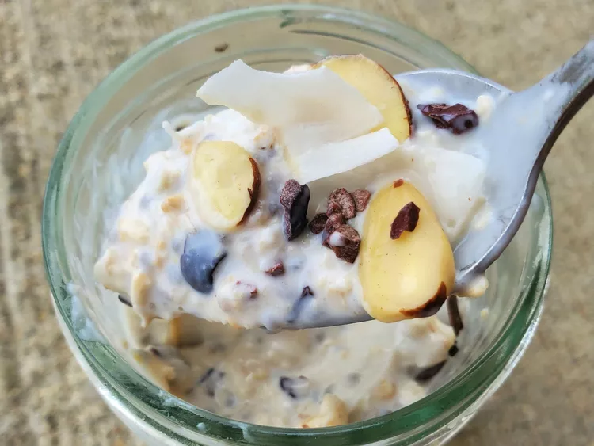

Coconut

These creamy coconut overnight oats have a great flavor and a
boost of protein from Greek yogurt and chia seeds.
I topped them with cacao nibs and almonds,
but feel free to use fresh fruit or any other topping.
Add honey or maple syrup if you like them sweeter.!
Ingredients
- ⅓ cup old-fashioned oats
- ⅓ cup coconut milk beverage
- ¼ cup nonfat vanilla Greek yogurt
- ½ tablespoon chia seeds
- 1 ½ tablespoons unsweetened shredded coconut, divided
- ½ tablespoon cacao nibs
- ½ tablespoon sliced almonds
Steps
- Combine oats, coconut milk beverage, Greek yogurt, chia seeds, and 1 tablespoon coconut flakes in an 8-ounce Mason jar. Stir until well combined, and cover with a lid. Refrigerate for 8 hours, or overnight.Cook the meat
- Top with ½ tablespoon coconut flakes, cacao nibs, and almonds flakes when ready to serve. Stir and enjoy.
Cook's Note:
Add a little more coconut milk or a sweetener if needed.